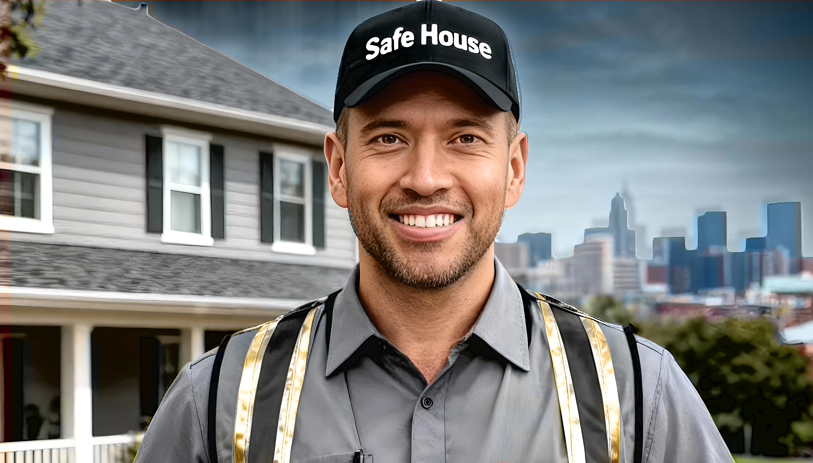
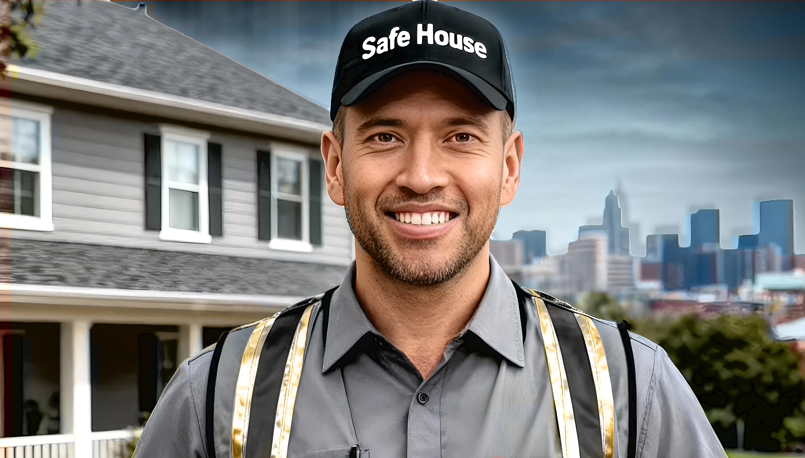

- This is where people gather
- who drove at 2 AM,
- knocked in the rain,
- heard “no” more times
- than we could count,
- And what set us apart
- wasn't a résumé,
- it's our insatiable hunger to succeed
- more than we
- wanted to breathe.
- I’m writing a life that I had been convinced was over.
- The work I’m doing now isn’t being erased.
- The work I’ve done is still rewarding with a residual paycheck.
- My determination turned into opportunity.
- What once just covered rent,
- now built a house for my children,
- and another one down the street for my mom.
- Finally, work has given me more than a paycheck--
- It gave me purpose.
- I protect families.
- I serve my community.